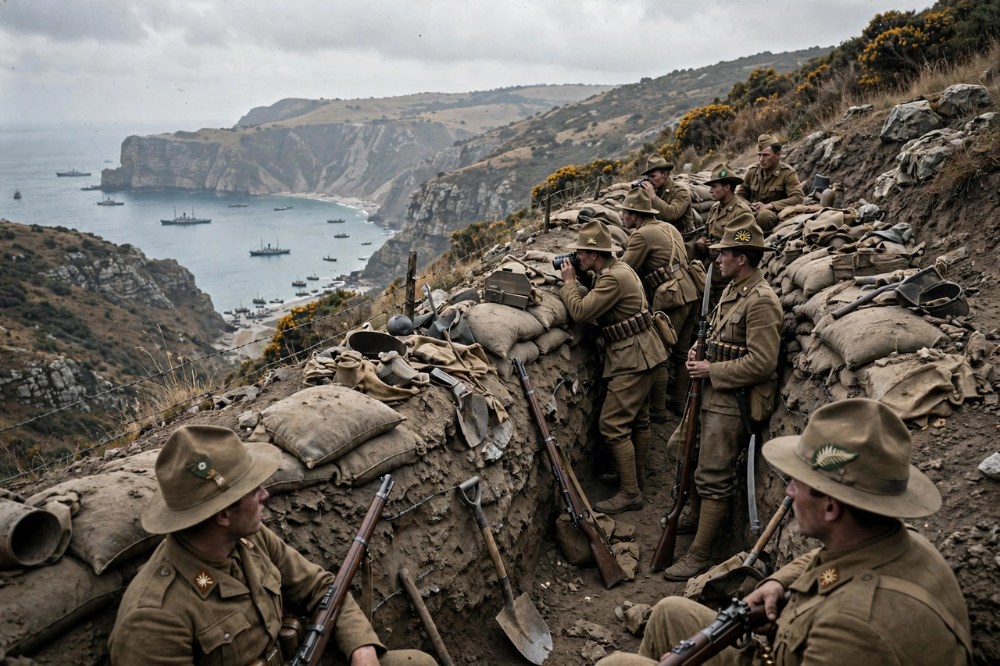

Gallipoli campaign
From Wikipedia, the free encyclopedia

The Gallipoli campaign (19 February 1915 – 9 January 1916) was an amphibious operation of the First World War in which British, French and Dominion forces attempted to seize the Dardanelles and Constantinople and knock the Ottoman Empire out of the war. After a failed naval attack, landings on the Gallipoli peninsula from 25 April 1915 bogged down into trench warfare; the Allies evacuated by January 1916 having suffered some 250,000 casualties, matched by roughly equal Ottoman losses. The campaign is a foundational national memory in Australia and New Zealand (Anzac Day, 25 April) and in Turkey, where the defence made the reputation of Mustafa Kemal Atatürk.
Origins and naval attack
Championed by Winston Churchill as First Lord of the Admiralty, the plan aimed to force the straits with ships alone, open a supply route to Russia and rally the Balkans. On 18 March 1915 a mines-and-guns combination sank three Allied battleships and crippled three more, ending the naval attempt and prompting a landing to take the forts from behind.
Land campaign
On 25 April, British and French troops landed at Cape Helles and Australians and New Zealanders (ANZAC) at what became Anzac Cove. Ottoman resistance — stiffened by the German general Otto Liman von Sanders and by Kemal's counter-attacks at Chunuk Bair — pinned the beachheads. The August offensive, including the Landing at Suvla Bay, failed to break out; disease, heat and then winter storms ravaged both armies.
Evacuation and legacy
The evacuation (December 1915 – January 1916), brilliantly executed without loss, was the campaign's most successful phase. A British inquiry (the Dardanelles Commission) damaged Churchill. For Turkey the victory is Çanakkale, a founding epic of the Republic; for Australia and New Zealand, Gallipoli is the 'birth of nationhood' myth, commemorated each 25 April with dawn services at home and at the peninsula.